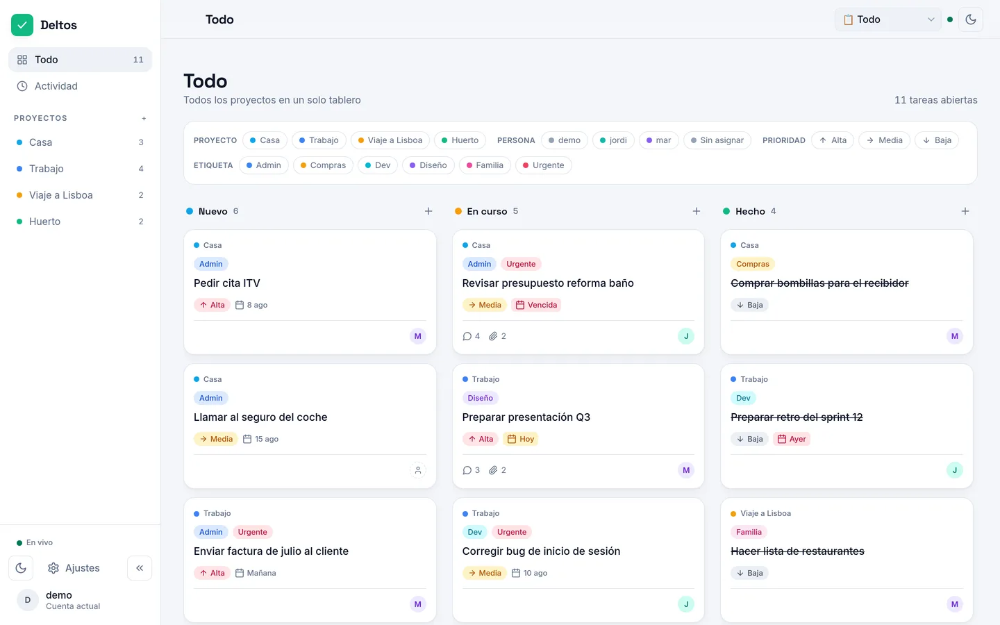
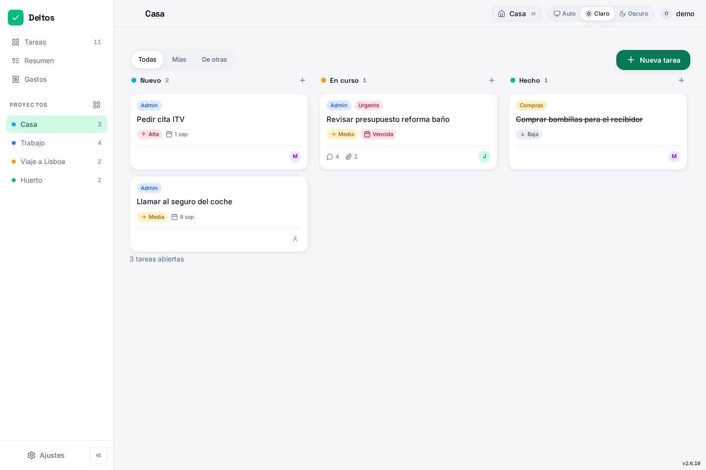
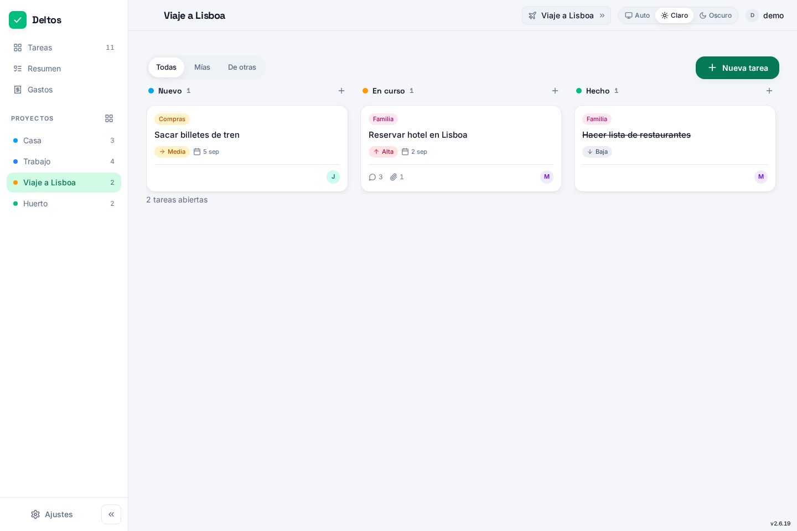
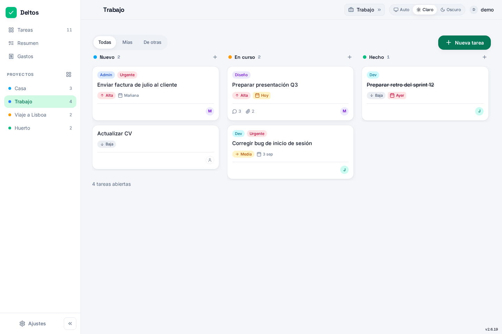

La vida de casa, en un tablero.
En vivo, sin nube.
Deltos es el corcho de la cocina para vuestra lista: la compra, la reforma, el viaje con amigos o lo del cole con los colegas. Pegáis una tarjeta, la movéis, y el resto lo ve al instante. Vive en vuestro servidor, sin cuentas ni suscripciones.

De la compra al trabajo, un solo corcho
Deltos sirve para lo que pasa de verdad: listas, planes, recados y proyectos pequeños. Tres escenas, todas de la app real en modo demo.
La compra y la casa
La lista que no se pierde en el chat. Quien pase por la tienda abre la tarjeta, tacha, y en casa lo ven al instante. Etiquetas para la reforma, el recibidor o lo urgente.

El viaje con amigos
Seis personas, un excel que nadie actualiza y un chat donde cada plan se pierde. En Deltos cada tarea tiene dueño, fecha y comentarios; los avisos llegan al móvil.

El cole y el trabajo
Un equipo pequeño, tareas compartidas y cada uno en su idioma. Roles de administrador y usuario, export a JSON y respaldos automáticos para irse tranquilo.

Los gastos de casa
Quién pagó qué y cuánto debe cada uno, sin el Excel de turno. Reparto equitativo o a medida, método de pago y saldar cuentas de un clic. Y si alguien no tiene cuenta, le mandas un enlace y marca su parte desde fuera.
(plugin opcional, se activa en Ajustes)
Notas en el corcho
Todo lo que cabe en el tablero, pegado en post-its.
Sincronización en vivo
Mueves una tarjeta y quien lo use la ve al instante, sin refrescar. Todo por SSE.
Avisos al móvil
Web Push con la app cerrada: quien te asigna o comenta, te avisa. Se activa con HTTPS.
Tarjetas con todo
Comentarios, adjuntos con recorte de imagen, prioridad, fechas y actividad por tarjeta.
Proyectos y etiquetas
Casa, trabajo, el viaje, el huerto. Cada proyecto con su tablero y etiquetas para filtrar.
Cada uno en su idioma
Roles admin y usuario, contraseñas cifradas y login con límite de intentos.
PWA instalable
Instálala como una app, funciona sin conexión, tema claro y oscuro y actualizaciones desde Ajustes.
Modo demo de un clic
Entra sin contraseña en una base separada con tareas de ejemplo. Ideal para probar antes.
Tus datos, tuyos
Export a JSON, respaldos automáticos con retención y registro de auditoría de cada acción de admin.
Gastos compartidos
Quién pagó qué y a cuánto toca cada uno. División equitativa o importes por persona, con Bizum, transferencia o efectivo.
Invita a quien quieras
Un enlace para que cualquiera vea su parte, los adjuntos y comente. Sin registro, sin contraseña. Marca como pagado y listo.
Saldar cuentas
Un clic para marcar todo como pagado entre dos personas. La app calcula quién debe a quién y te lo resume en un panel.
La categoría que faltaba: un tablero ligero para la vida real
La comparativa es entre tableros de tareas, no entre suites de oficina. Con datos contrastados contra las fuentes públicas de cada proyecto en agosto de 2026.
Plataforma y despliegue
| Deltos | Trello | Jira | Vikunja | Focalboard | Wekan | |
|---|---|---|---|---|---|---|
| Self-hosted | ✓ | ✗ (solo nube) | ◐ (DC, fin 2029) | ✓ | ✓ (sin mantenim.) | ✓ |
| Cuenta / suscripción | ninguna | gratis con límites | por usuario | opcional | ninguna | ninguna |
| RAM realista | ~55 MB | nube | nube | no publicada | no publicada | 1 GB mín. |
| Dependencias | Node + SQLite | — | — | Go + Vue | Go + React | MongoDB |
| Licencia | AGPL-3.0 | propietaria | propietaria | AGPL-3.0 | MIT/AGPL | MIT |
| Mantenimiento activo | sí | sí | sí | sí | ✗ (discontinuado) | sí |
Tareas cotidianas
| Deltos | Trello | Jira | Vikunja | Focalboard | Wekan | |
|---|---|---|---|---|---|---|
| Kanban + arrastrar | ✓ | ✓ | ✓ | ✓ | ✓ | ✓ |
| Sincronización en vivo | ✓ (SSE) | ✓ | ✓ | ✗ no doc. | ✗ no doc. | ✓ |
| Push móvil con app cerrada | ✓ (VAPID) | ◐ apps | ✗ no doc. | ✗ no doc. | ✗ no doc. | ✗ no doc. |
| Comentarios | ✓ | ✓ | ✓ | ✓ | ✓ | ✓ |
| Adjuntos | ✓ | ✓ | ✓ | ✓ | ✗ no doc. | ✓ |
| Etiquetas | ✓ | ✗ no doc. | ✗ no doc. | ✓ | ✗ propiedades | ✓ |
| Fechas límite | ✓ | ✓ | ✓ | ✓ | ✓ | ✓ |
| Roles multiusuario | ✓ | ✓ | ✓ | ✓ | ✗ no doc. | ✓ |
| Export de datos | ✓ | ◐ solo premium | ✓ | ✓ | ✓ | ✓ |
| Modo demo | ✓ | plantillas | ✗ no doc. | ✓ | ✗ no doc. | ✓ |
| PWA instalable | ✓ | apps nativas | apps nativas | ✗ no doc. | apps nativas | ✗ no doc. |
| Gastos compartidos con splits | ✓ | ✗ no doc. | ✗ no doc. | ✗ no doc. | ✗ no doc. | ✗ no doc. |
| i18n ES/EN | ✓ | multi | multi | ✗ no doc. | multi | multi |
El lado honesto
Deltos hace deliberadamente menos: no tiene swimlanes, vista Gantt, CalDAV, integraciones ni automatizaciones complejas. Si gestionas software con sprints, usa Jira. Si quieres un gestor todo en uno con Gantt y calendarios, Vikunja te sirve mejor. Y Trello sigue siendo un producto impecable si no te importa que tus tableros vivan en la nube de Atlassian.
Pero si lo que buscas es un tablero compartido para la vida de casa, en tu propio servidor, con tus datos en un fichero que se copia y ya, en esta categoría Deltos es la única herramienta. Y es la única que avisa al móvil con la app cerrada y se instala con una sola línea.
Pon tu propio corcho
El instalador descarga la última versión, verifica su checksum e instala Node y el servicio systemd. Sin Docker, sin dependencias manuales.
curl -fsSL https://raw.githubusercontent.com/gnacho/deltos/main/install.sh | sudo sh
- Linux con systemd (x86_64 o arm64)
- Node se instala solo, verificado
- Sin Docker (hay opción Docker)
- Web Push requiere HTTPS (NPM/Caddy)
Principios del club cloudless
Deltos sigue los tres principios del Club Cloudless: soberanía digital, libre para siempre y de personas, no de empresas. Son comunes a todas las apps del club y viven en un único sitio.
Detrás de Deltos hay una persona
Deltos no nació para publicarse. Lo empecé para organizar un viaje con unos amigos, y se quedó en la cocina de casa: la compra, la reforma, lo del cole. Y lo he usado a diario durante mucho tiempo: es mi herramienta unificada para llevar la vida en un tablero. Lo desarrollo en mi tiempo libre, entre el trabajo y la familia.
Con el tiempo, y de forma consecuente con los principios en los que creo, he decidido liberarlo y compartirlo con la comunidad. No hay ninguna empresa detrás, solo una persona que usa lo que publica. Será gratuito siempre, corre 24/7 en producción en mi casa y cada versión se prueba ahí primero. Si te sirve, me alegro. Si algo falla, quiero enterarme.